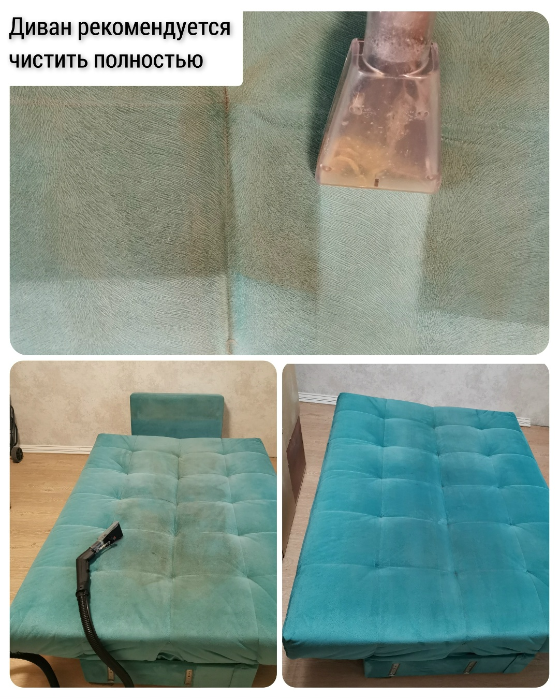
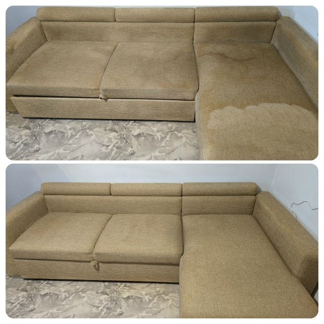
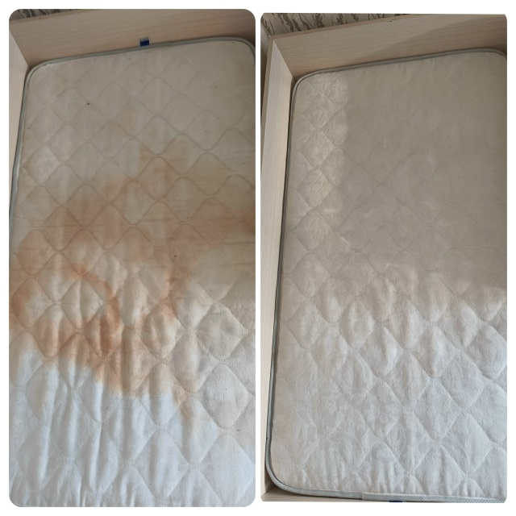
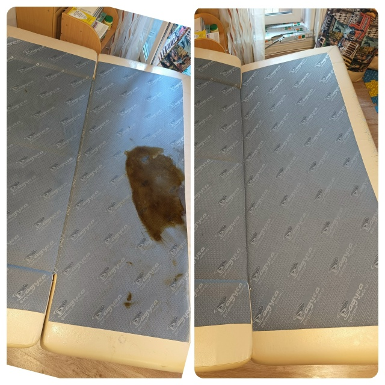

Почему стоит доверить химчистку профессионалам?
Ошибки самостоятельной чистки и преимущества проф. подхода.
Профессиональная чистка диванов, кресел, матрасов, ковров
Дмитрий | +7 (950) 642-22-92
👋 Здравствуйте! Меня зовут Дмитрий, я с удовольствием помогу вам с чисткой мебели в квартире, доме и офисе. На счету более 1000 выполненных заказов по химчистке мягкой мебели. Вы будете довольны результатом, так как со мной вы сохраните своё время и силы!
📞 Пишите или звоните для консультации и расчета стоимости!
🌟 Добавляйте в избранное, чтобы не потерять!
| Услуга | Цена (₽) |
|---|---|
| Диван прямой | от 2 000 |
| Диван угловой | от 3 000 |
| Диван П-образный | от 4 500 |
| Кресло | от 700 |
| Стул (за 1 шт.) | от 500 |
| Кухонный уголок | от 1 700 |
| Матрас (односпальный) | от 1 500 |
| Матрас (двуспальный) | от 2 500 |
| Ковёр / ковролин | от 1 500 |
Отзыв: Химчистка углового дивана. Результат впечатляет!

Прямой диван — результат химчистки

Угловой диван — обновление ткани

Матрас — удаление запаха и пятен

Удаление застарелых пятен
Чистка мебели в кафе "Пожарка"
Чистка ковролина экстрактором
Ошибки самостоятельной чистки и преимущества проф. подхода.
Велюр, замша, нубук, гобелен — как правильно ухаживать.
Способы удаления крови, чая, вина, воска, жвачки.
Почему регулярная химчистка важна для профилактики.